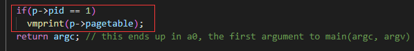
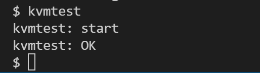
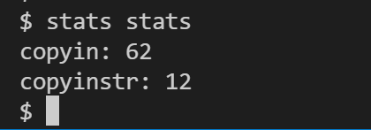
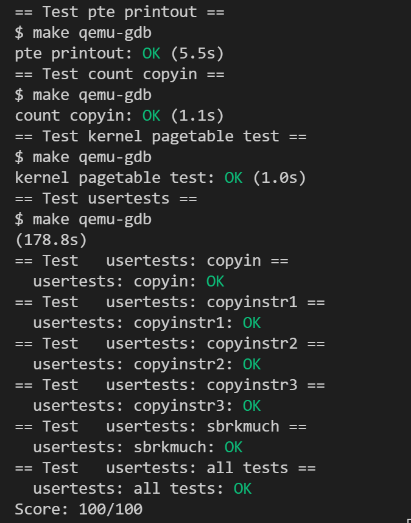

实验概述¶
学术诚信与独立实践
- 独立红线 ：请独立完成实验，主动避免阅读、使用他人或互联网上现成的实验代码。
- 讨论边界 ：遇到困难时，请先自己分析、实现、调试；可以讨论思路，但不要交换代码。
- AI 准则 ：可适度使用 AI 辅助理解概念、梳理思路、定位问题；不要直接提交本人未充分理解的 AI 生成内容。
- 重在收获 ：课程看重的不只是结果，更看重你在实践中形成的理解与能力。
实验说明
建议资料：
- xv6 book 第 3 章 Page tables
kernel/memlayout.hkernel/vm.ckernel/kalloc.c- 我校讲解视频：XV6（二）进程管理
- 我校讲解视频：XV6（三）内存管理
阅读建议
本实验会同时涉及页表结构、内核页表切换和用户地址访问。建议至少先通读一遍三项任务，再开始写代码。
0. 分数说明¶
本实验有三个任务。作为最后一个 MIT xv6 实验，任务二和任务三的难度会比前几次实验明显更高；即使你暂时没能完全实现，也仍然建议把自己的设计思路写清楚，以尽可能拿到对应分数。
1. 实验报告
- 回答实验中的问题 40%；
- 给出实验设计思路 60%：任务一：30%、任务二：20%、任务三：10%
若某个任务没有给出设计思路，则该任务对应的代码分记 0 分。
2. 实验代码
- 任务一：50%
- 任务二：30%
- 任务三：20%
若某个任务代码无法通过测试，则实验报告中该任务的设计分最高只能得到满分的 50%。因此，即使没能完全做出来，也应尽量把自己的设计思路写出来。
1. 实验目的¶
- 理解 xv6 页表的基本结构、虚拟地址翻译过程和内存管理机制。
- 学会通过打印页表和观察页表项，理解地址空间的组织方式。
- 通过实现独立内核页表和软件模拟地址翻译，掌握页表修改与地址映射的基本方法。
- 加深对用户态地址空间、内核态地址空间以及地址访问过程的整体认识。
- 为后续理解更复杂的内存管理问题打下基础。
2. 实验学时¶
本实验为 4 学时。
3. 实验内容及要求¶
先分清 2 种命令行
Linux 终端：执行git checkout pgtbl、make clean、make qemu、make grade。xv6命令行：执行kvmtest、usertests、stats stats等测试程序。
3.1 先切换到 Lab4 对应分支¶
本实验基于 pgtbl 分支。
请先在 Linux 终端 中保存 Lab3 的代码，再切换分支：
git checkout pgtbl
make clean
如果 Git 提示你还有未提交修改，请先提交或暂存；不要直接把 Lab3 的改动带到 Lab4 里。
这里的正确顺序是：先保存，再切换分支
具体怎么保存可以参考 Lab3 3.1 切换分支 的做法。这里与 Lab3 的主要区别是：
- 你要保存的是
Lab3的代码； - 目标分支是
pgtbl，而不是lock。
这次实验有一个额外注意点
本实验的 输出格式不同于 MIT 原版实验，请严格按照指导书要求实现，不要只对着 MIT 官方输出做。
3.2 任务一：打印页表¶
这一题主要修改 kernel/vm.c 和 kernel/exec.c。
本题的目标是：
- 实现一个页表打印函数
vmprint()； - 在合适的位置打印第一个用户进程的页表；
- 让输出格式严格符合本指导书要求。
3.2.1 打印函数定义¶
void vmprint(pagetable_t pgtbl)
该函数接收一个 根页表指针 作为参数，并打印对应页表中的有效映射。
函数的使用位置：最终提交时，应当只在 exec() 逻辑结束前打印第一个进程或刚载入程序的页表。开发时你可以临时插在别处调试，但最后应只保留这一处。
- 在
exec.c的return argc之前插入vmprint()调用，以输出第一个进程或刚载入程序的页表。vmprint()的入参可根据你的实现自行填写。

3.2.2 结果示例¶
当 xv6 启动时，它会通过 exec() 启动第一个进程 init。这时你的函数应打印出类似下面的输出：
xv6 kernel is booting
hart 1 starting
hart 2 starting
page table 0x0000000087f25000
||idx: 0: pa: 0x0000000087f21000, flags: ----
|| ||idx: 0: pa: 0x0000000087f20000, flags: ----
|| || ||idx: 0: va: 0x0000000000000000 -> pa: 0x0000000087f22000, flags: rwxu
|| || ||idx: 1: va: 0x0000000000001000 -> pa: 0x0000000087f1f000, flags: rwx-
|| || ||idx: 2: va: 0x0000000000002000 -> pa: 0x0000000087f1e000, flags: rwxu
||idx: 255: pa: 0x0000000087f24000, flags: ----
|| ||idx: 511: pa: 0x0000000087f23000, flags: ----
|| || ||idx: 510: va: 0x0000003fffffe000 -> pa: 0x0000000087f76000, flags: rw--
|| || ||idx: 511: va: 0x0000003ffffff000 -> pa: 0x0000000080007000, flags: r-x-
init: starting sh
$
如果你现在对这些页表项还不熟，不必着急；先知道目标输出长什么样即可，具体含义可以结合 实验原理 再回来看。
一些注意事项
由于xv6不支持%c, 因此打印字符的时候请通过将字符转化为字符串的方式，使用%s格式化字符串 。
- 第一行
page table 0x...，打印的是vmprint的参数，也就是这张根页表所在页的地址；在 xv6 这里，它通常可以直接按根页表页的物理地址理解。 - 在之后打印的则是页表项。RISC-V的页表被设计成了三层（具体见实验原理），每一个”||“都代表一层。
- 打印的格式为：（注意 冒号后面都接一个空格 ）
- 如果是非叶节点，则为：
idx: [索引编号]: pa: [物理地址], flags: [四个权限位(r/w/x/u)] - 如果是叶子节点，则为：
idx: [索引编号]: va: [虚拟地址] -> pa: [物理地址], flags: [四个权限位(r/w/x/u)]
- 如果是非叶节点，则为：
- 上述的详细含义为：
索引编号: 指示了该页表项在当前等级页表内的序号（取值范围：0-511）；物理地址：指示了这个页表项对应的十六进制物理地址；flags的四个权限位：指示了这个页表项的flags，包括读（R）、写（W）、执行（X）、用户态（U）
- 只打印有效的pte。
在上面的示例中，根页表只有第 0 项和第 255 项有效；其中第 0 项继续向下只展开到索引 0，再往下则映射了叶子页表中的 0、1、2 三项。
你的输出中的物理地址可能与示例不同，但打印出的层级结构、有效项数量和虚拟地址应保持一致。
一个非常常见的错误：va 打错
很多同学这里容易把 va 打错，尤其是最后两项 idx: 510 和 idx: 511 对应的虚拟地址。常见原因是：
- 在拼接
L2 / L1 / L0 / offset时位移位数写错； - 使用了不合适的整数类型，导致高位计算时发生溢出或符号扩展问题；
- 递归打印时没有正确利用“当前层级索引路径”去还原完整虚拟地址。
3.2.3 测试¶
完成后执行 make grade，其中的 pte printout 就是这一题对应的测试（可参考 3.5 最终测试）。
3.3 任务二：独立内核页表¶
先抓住这题最核心的一句话：
原版 xv6 在内核态时，所有进程共用一张
kernel_pagetable；现在你要改成“每个进程在内核态运行时，都使用自己的内核页表”，但原有的全局kernel_pagetable仍然需要保留。
先回顾一下原版 xv6 里页表是怎么用的
- 进程在 用户态 运行时，使用它自己的用户页表
p->pagetable； - 进程一旦 进入内核态，就切到全局共享的
kernel_pagetable； - 调度器
scheduler()本身也运行在这张全局kernel_pagetable上； - 等进程准备返回用户态时，再切回该进程自己的用户页表。
你可以把这题理解成 3 件事：
- 给每个进程准备一张自己的内核页表；
- 当 CPU 运行这个进程的内核态代码时，切换到它自己的内核页表；
- 当进程结束时，把这张内核页表正确回收。
这题真正需要你处理的点通常包括：
- 为
struct proc增加字段，保存该进程自己的内核页表； - 创建进程时，为它建立一张新的内核页表，并保留原来内核需要的那些映射；
- 把该进程自己的 内核栈 映射进这张页表；
- 在调度器切换进程时，把
satp切到对应进程的内核页表，并刷新 TLB； - 当当前没有用户进程运行时，让调度器回到全局内核页表；
- 进程退出时释放这张内核页表本身，但不要误释放其中共享的内核物理页。
这题暂时不要做什么
- 先 不要 把用户页表映射并进来；
- 先 不要 去改
copyin()/copyinstr()的逻辑； - 这些事情属于任务三，不是任务二。
也就是说，任务二的重点是：
- 先把“每进程一张独立内核页表”这套机制搭起来；
- 让内核态切换、内核栈、页表回收都能正常工作；
- 暂时保持“用户地址在内核中仍不能直接访问”这一点不变。
3.3.1 测试¶
先在 xv6 中运行 kvmtest。如果你确实为每个进程使用了独立内核页表，输出应与下图同类：

然后运行 usertests，确保所有测试通过（出现 "ALL TESTS PASSED"）。
关于任务二测试，多提醒一句
kvmtest 更适合作为任务二的快速自检，但不要把它当成充分条件。MIT 官方 pgtbl 实验在这一部分给出的通过标准，本质上仍是 usertests 能否稳定通过。任务三又直接建立在任务二之上，因此即使 kvmtest 已经通过，后面如果在 copyin_new() / copyinstr_new()、stats stats 或 usertests 中出现问题，也仍然建议回来自检任务二，尤其是页表切换、内核栈映射和页表回收这些路径。
3.4 任务三：简化软件模拟地址翻译¶
当前 xv6 使用 kernel/vm.c 中的 copyin() / copyinstr()，通过“软件模拟翻译”的方式，把用户虚拟地址一步步翻译成物理地址后再访问。
本题要求你：
- 在独立内核页表中加入用户地址空间映射；
- 用
copyin_new()/copyinstr_new()替换原来的软件模拟翻译路径； - 让内核在访问用户地址时可以更多依赖硬件，而不是每次都手动遍历页表。
先理解：为什么原版 xv6 需要软件模拟翻译
- 用户程序传给内核的很多指针，指向的都是 用户虚拟地址。
- 但原版 xv6 在内核态运行时，使用的是全局
kernel_pagetable，其中 并没有用户地址空间的映射。 - 所以，内核即使拿到了这个用户指针，也不能直接解引用访问。
- 原版做法是：先找到该进程的用户页表，再用
walkaddr()之类的逻辑手动查页表，把用户虚拟地址翻译成物理地址，然后再去访问。
这就是“软件模拟翻译”的由来。任务三要做的，就是在任务二的基础上，尽量把这条慢路径换成“内核可直接访问用户虚拟地址”的方式。
3.4.1 任务要求¶
- 实验框架已经提供了新的函数
copyin_new()/copyinstr_new()（定义在kernel/vmcopyin.c中），你 不需要实现它们。你需要做的是：找到调用copyin()（kernel/vm.c）的地方，用copyin_new()替换；同样地，用copyinstr_new()代替copyinstr()。 - 在独立内核页表加上用户页表的映射，以保证刚刚替换地新函数能够使用。但是要注意地址重合问题，见“实验原理 3.5”.
3.4.2 结果示例¶
先在 xv6 中运行 stats stats。如果你确实让系统走到了 copyin_new() / copyinstr_new() 路径，输出里的相关计数应不为零：

然后运行 usertests，确保所有测试通过（出现 "ALL TESTS PASSED"）。
3.5 最终测试¶
三项任务都完成后，请在 Linux 终端 中执行：
make grade
通过时会显示类似结果：
